Product Catalogue.
Advanced ANVIX™ films are engineered with 100% virgin raw materials and advanced multi-layer co-extrusion technology for modern agriculture, water management and environmental protection — protecting crops, conserving resources, empowering farmers.
ANVIX™ Greenhouse Films
Engineered with advanced additive technology to optimise light management, extend service life and protect crops under demanding greenhouse conditions.
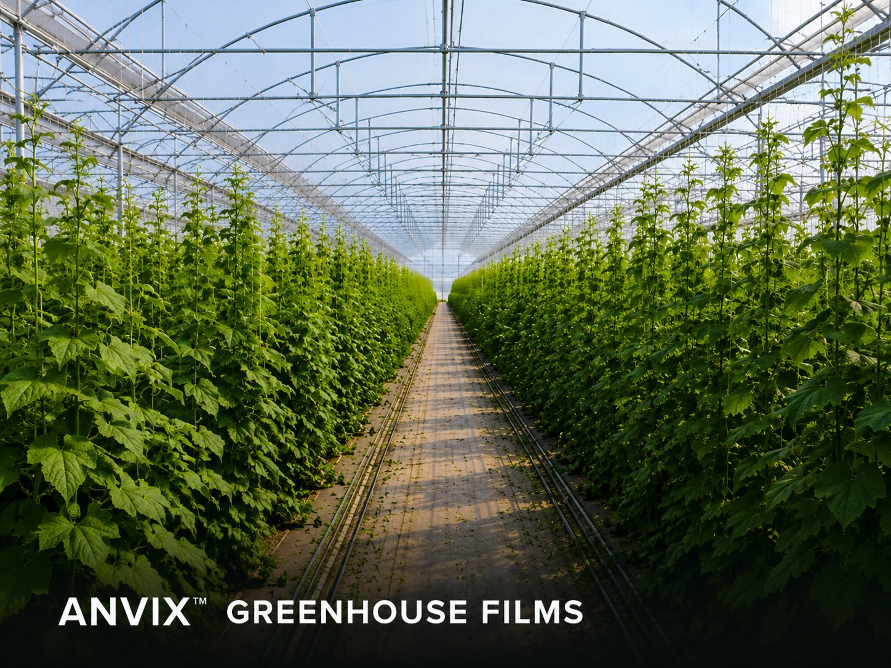
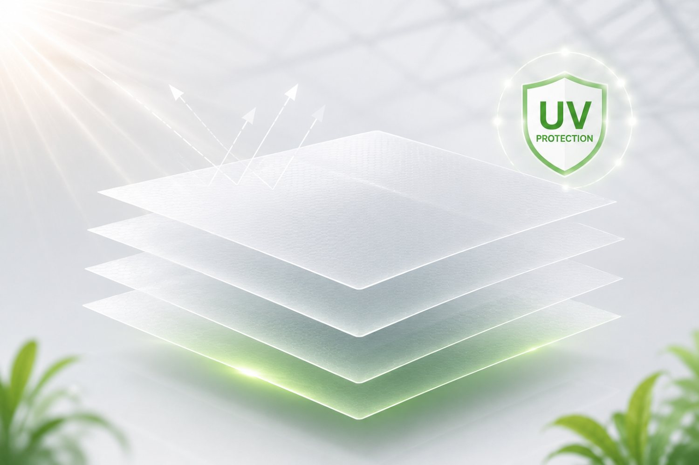
High quality UV stabilizers protect films from degradation and extend service life.
- UV stabilizer technology
- Multi-season durability
- Resistance to embrittlement
- Improved weather resistance
- Lower replacement frequency
- Reduced maintenance cost
- Consistent crop protection
- Better long-term performance
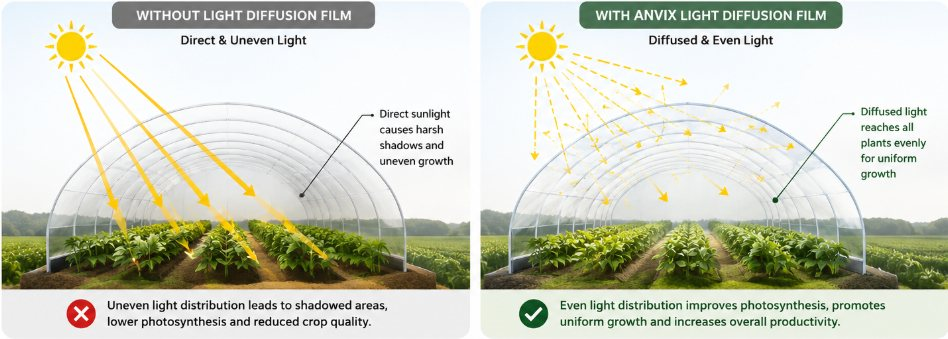
Enhanced mechanical properties for high durability and resistance to tearing.
- Multi-layer co-extrusion structure
- High tensile strength
- Excellent tear resistance
- Impact and puncture resistance
- Withstands harsh weather conditions
- Reduced risk of tearing and punctures
- Lower maintenance requirements
- Improved structural reliability
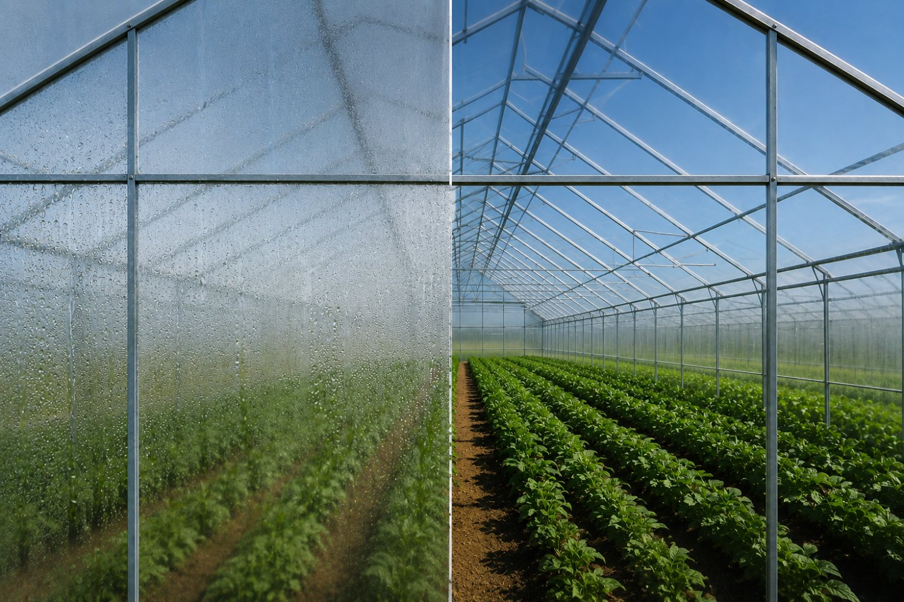
Maximizes natural light penetration for healthier crop growth.
- High PAR light transmission
- Low-haze formulation
- Optical clarity retention over time
- Balanced light distribution
- Improved photosynthesis efficiency
- Stronger and more uniform plant growth
- Better yields during low-light seasons
- Reduced need for supplemental lighting

Distributes light evenly throughout the canopy to reduce shadows and improve uniformity.
- Crystal Clear option
- Medium Diffusion (35–50%)
- High Diffusion (60–75%)
- Maintains overall light transmission
- More uniform crop growth across the canopy
- Reduced leaf scorch and localized overheating
- Improved light penetration to lower leaves
- Better fruit set and quality distribution
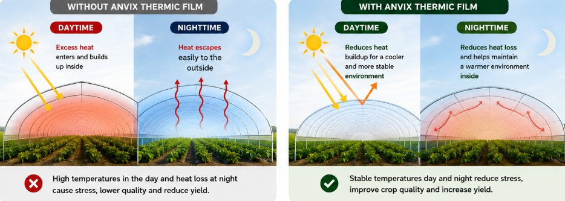
Reduces heat loss during night-time and maintains a stable growing environment.
- IR-reflective additive layer
- Reduced nighttime heat loss
- Improved thermal retention
- Compatible with standard greenhouse structures
- Lower heating energy consumption and costs
- More stable day-to-night growing conditions
- Reduced risk of cold stress or chilling injury
- Extended growing season into cooler months
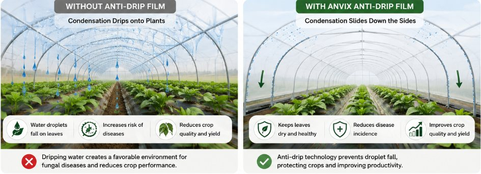
Transforms droplets into a water film to improve light transmission.
- Surfactant-treated inner surface
- Prevents droplet formation
- Maintains film clarity under condensation
- Channels water away from crops
- Reduces disease pressure caused by dripping water
- Improves light transmission under humid conditions
- Protects crops from cold water drips
- Maintains a drier canopy microclimate
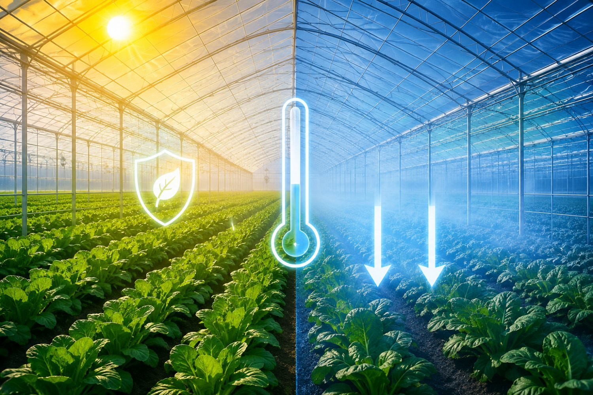
Reduces condensation and maintains greenhouse clarity.
- Condensation-resistant surface coating
- Maintains visual clarity in humid conditions
- Reduces internal humidity buildup on film surface
- Stable performance across temperature swings
- Better visibility for crop monitoring and management
- Reduced humidity-related disease pressure
- More consistent light transmission
- Improved working conditions inside the greenhouse
Minimizes dust accumulation and maintains optical performance.
- Anti-static surface treatment
- Reduced dust and particle adhesion
- Maintains optical clarity longer
- Easier surface cleaning
- Maintains consistent light transmission over time
- Reduced frequency of film cleaning
- Lower labour and maintenance costs
- Improved long-term film appearance

Supports crop protection through specialized film technologies.
- Reduced surface condensation
- Selective UV-blocking properties
- Compatible with IPM programmes
- Combines multiple supporting technologies
- Lower overall disease pressure
- Reduced reliance on fungicide applications
- Healthier and more uniform crop canopy
- Supports sustainable production practices
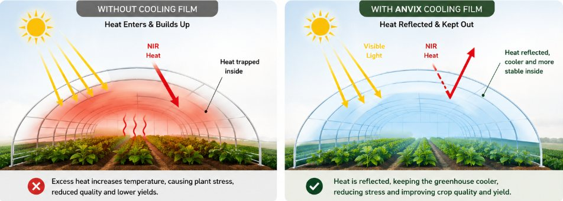
Reduces excessive heat build-up inside the greenhouse.
- Solar-reflective additive technology
- Reduces peak daytime temperatures
- Maintains usable PAR light levels
- Balances heat and light management
- Lower greenhouse cooling costs
- Reduced heat stress on sensitive crops
- Extended summer production windows
- More stable internal growing conditions
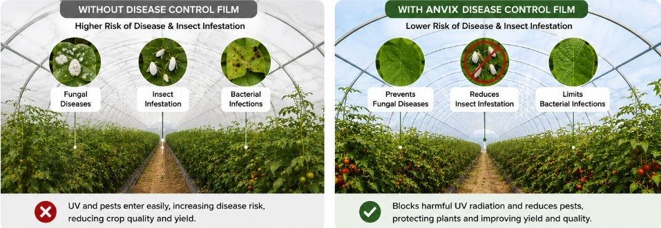
Modifies the light spectrum to influence crop growth and development.
- Spectrum-modifying additive technology
- Customisable light filtering profiles
- Crop-specific film formulations available
- Influences plant morphological response
- Influences plant growth habit and form
- Can help deter certain insect pests
- Supports specialty and high-value crop programmes
- Enables tailored growing strategies
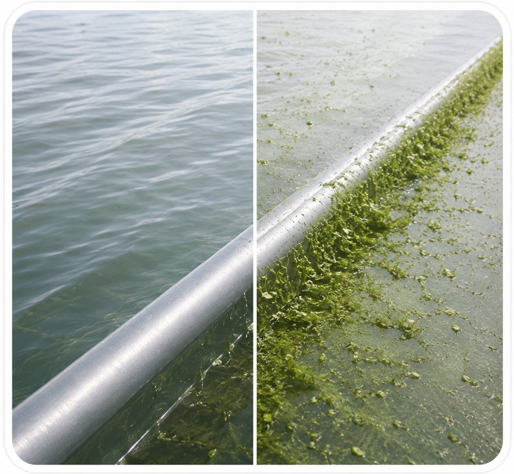
Helps prevent algae formation and maintains film transparency.
- Algae-inhibiting additive package
- Maintains surface transparency over time
- Reduces structural surface buildup
- Suitable for humid or shaded environments
- Preserves long-term light transmission
- Reduced cleaning and maintenance requirements
- Extended film appearance and service life
- Lower risk of surface degradation
ANVIX™ Mulch Films
Multilayer co-extruded films for weed suppression, moisture conservation and improved soil conditions across vegetable, fruit and orchard applications.
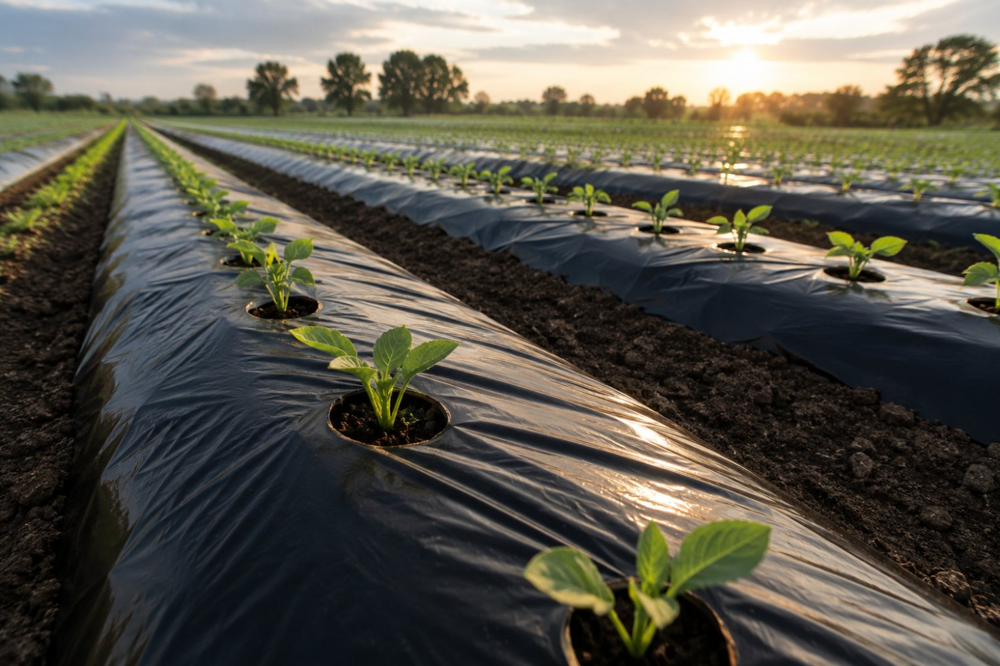
Designed for short-season crop production, providing effective weed control, moisture conservation and improved soil conditions. Produced using advanced polyethylene formulations for reliable strength and consistent field performance.
- Conventional PE Film
- Thickness: 12 µm – 30 µm
- Colours: Black · White (custom)
Vegetables, chilli, tomato, watermelon, melon and other seasonal crops.
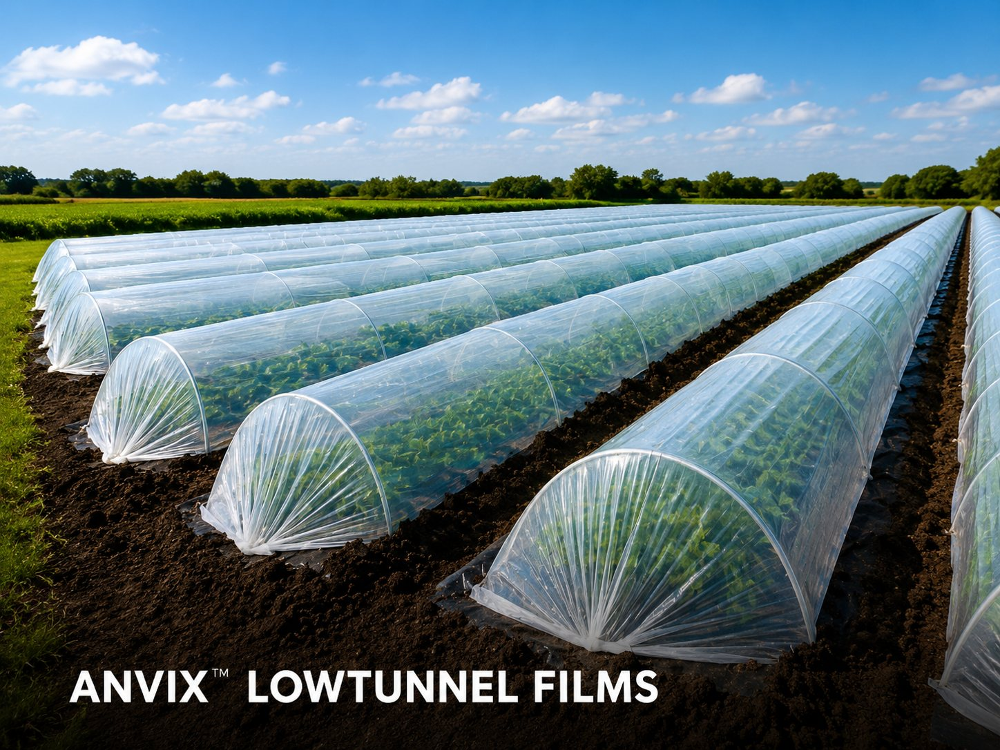
A sustainable mulch film solution that naturally biodegrades in soil, eliminating film retrieval and reducing plastic waste. Ideal for organic farming, sustainable agriculture, ESG and environmentally conscious projects.
- Biodegradable PBAT/PLA
- Thickness: 12 µm – 25 µm
- Colours: Black
Lettuce, spinach, zucchini, cucumbers, eggplants, garlic and other seasonal crops.
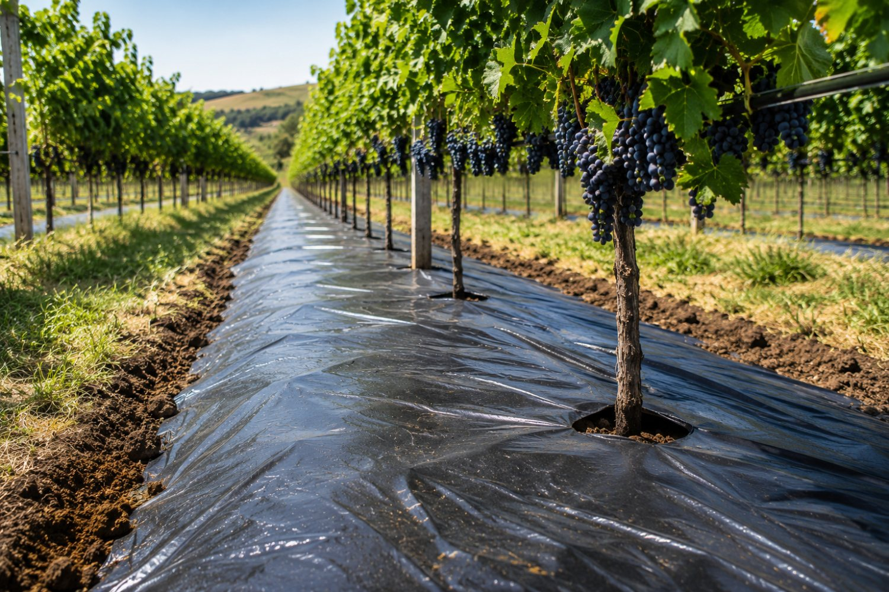
Engineered for extended field life with enhanced strength and UV stability, ideal for long-term and multi-season applications.
- UV-Stabilised PE Film
- Thickness: 50 µm – 100 µm
- Colours: Black
Blueberries, vineyards, orchards, citrus plantations and perennial crops.
Designed to maximize light reflection, improve crop development, and help reduce insect pressure in high-value crops.
- Reflective PE Film
- Thickness: 15 µm – 30 µm
- Colours: Silver / Black · White / Black
Capsicum, tomato, cucumber, berries and premium horticultural crops.
ANVIX™ Silage Films
Protects forage quality, reduces spoilage losses and improves storage efficiency — from bale wrapping to oxygen barrier covers.
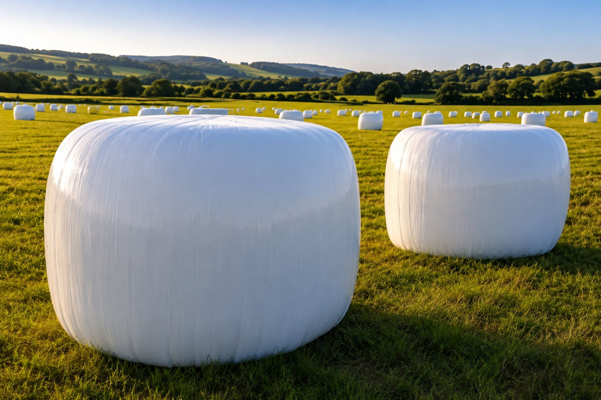
ANVIX™ Bale Wrapping Films are engineered to provide reliable airtight protection for round and square silage bales. Manufactured from high-performance polyethylene resins, the film combines exceptional stretchability, puncture resistance and cling performance to maintain bale integrity throughout storage.
- Multi-layer co-extrusion technology
- High puncture resistance
- Excellent cling performance
- UV stabilized
- Consistent stretch properties

ANVIX™ Silage Bags are engineered from high-strength multi-layer polyethylene films designed to create a reliable airtight storage environment for both silage and grain applications.
- High mechanical strength
- Excellent oxygen barrier
- Long-term outdoor durability
- Suitable for forage and grain storage
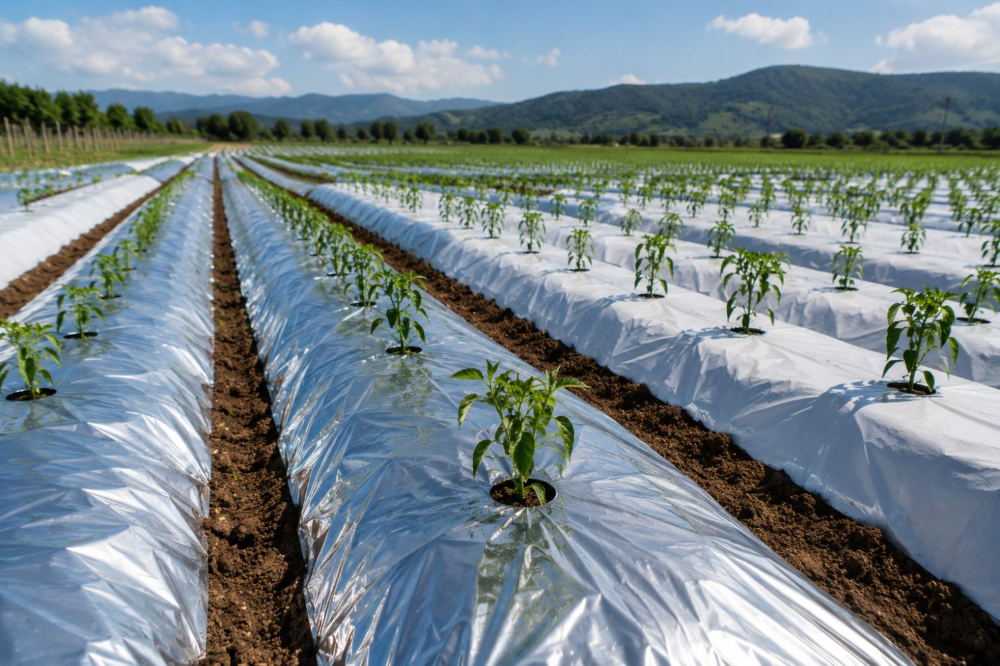
Engineered with advanced 7-layer co-extrusion technology, ANVIX™ Oxygen Barrier Silage Cover significantly reduces oxygen permeability compared with conventional PE silage films. The enhanced barrier structure helps maintain anaerobic fermentation conditions, reducing spoilage and preserving valuable nutrients within the silage.
ANVIX™ Low Tunnel Films
Four film types engineered for early-season protection, thermal management and cooling across a range of climates.
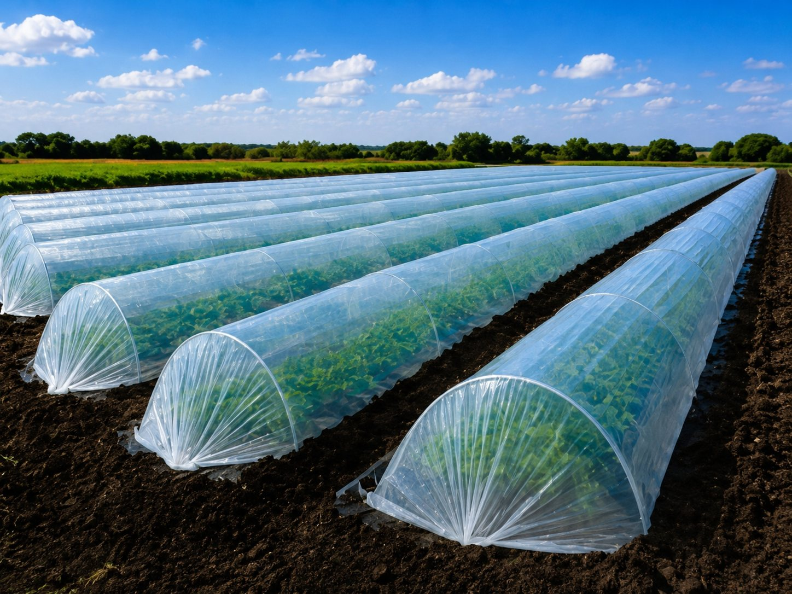
A cost-effective solution for general crop protection and early-season cultivation. Manufactured from high-quality polyethylene resins, it provides excellent transparency, mechanical strength and weather resistance while allowing maximum natural light transmission.
- High light transmission
- Good mechanical strength
- Excellent transparency
- Easy installation
- Cost-effective solution
- Faster crop establishment
- Improved plant growth
- Reduced environmental stress
- Higher crop uniformity
- Economical cultivation cost
Incorporates specialised Infrared (IR) retention technology designed to reduce heat loss during the night. By retaining thermal radiation within the tunnel, it maintains stable night-time temperatures — improving night temperatures by approximately 2–4°C under suitable conditions.
- IR heat retention technology
- Improved night-time temperature stability
- Reduced temperature fluctuations
- Enhanced protection during cooler periods
- Suitable for early-season cultivation
- Reduced frost risk
- Faster crop development
- Earlier harvesting
- Improved crop quality
- Increased productivity
Engineered with PAR and NIR management technology to reduce excessive heat build-up within the tunnel. By filtering near-infrared radiation, it maintains cooler temperatures during hot weather — ideal for tropical and subtropical growing environments.
- PAR and NIR management technology
- Reduced heat accumulation
- Improved temperature control
- Enhanced crop comfort
- Better environmental stability
- Lower plant stress
- Improved crop quality
- Better summer performance
- Reduced overheating risk
- Enhanced productivity in hot climates
Features strategically designed perforations that improve air circulation and moisture management within the tunnel. The perforation system regulates temperature, reduces condensation and maintains healthier growing conditions. Available in various perforation patterns.
- Enhanced ventilation
- Improved moisture control
- Reduced condensation
- Better temperature regulation
- Optimised tunnel environment
- Healthier crop development
- Reduced disease pressure
- Improved air circulation
- Lower humidity levels
- Better crop quality
ANVIX™ HDPE Geomembrane
High tensile strength, excellent chemical resistance and rigid structure — ideal where dimensional stability matters for pond, reservoir and containment applications.

GM13 is the industry-recognised specification for HDPE geomembranes, covering minimum requirements for thickness, tensile properties, tear resistance, puncture resistance and carbon black content.
Material properties are evaluated using established ASTM test methods, including tensile properties, tear resistance, puncture resistance, density and dimensional stability.
Each production batch is monitored for thickness uniformity, surface quality and mechanical properties to ensure consistent compliance with specification.
OIT testing verifies the effectiveness of antioxidant packages, supporting long-term durability claims for outdoor installations.
- High Tensile Strength — Designed to withstand significant mechanical loads and maintain structural integrity under demanding conditions.
- Excellent Rigidity — Provides dimensional stability and resistance to deformation across varying site conditions.
- Chemical Resistance — Resistant to a broad range of acids, alkalis, salts and industrial chemicals.
- UV Stabilised — Carbon black and UV stabiliser systems protect against long-term sunlight exposure.
- Low Permeability — Creates an effective barrier against water migration and seepage.
- Long Service Life — Designed for long-term outdoor use with excellent weathering and ageing resistance.
- Reliable Containment — Provides dependable anti-seepage performance for ponds, reservoirs and containment facilities.
- Environmental Protection — Helps prevent soil and groundwater contamination through secure containment.
- Industry Compliance — Manufactured to internationally recognised geomembrane standards including ASTM and GRI specifications.
- Versatile Applications — Suitable for aquaculture, water storage, landfill, mining and industrial containment projects.
ANVIX™ LLDPE Geomembrane
Superior flexibility, elongation and puncture resistance — ideal for ground movement, uneven surfaces and demanding installation conditions.
GM17 is the industry-recognised specification for LLDPE geomembranes, covering minimum requirements for thickness, tensile properties, tear resistance, puncture resistance and carbon black content.
Material properties are evaluated using established ASTM test methods, including tensile properties, tear resistance, puncture resistance, density and dimensional stability.
Each production batch is monitored for thickness uniformity, surface quality and mechanical properties to ensure consistent compliance with specification.
OIT testing verifies the effectiveness of antioxidant packages, supporting long-term durability claims for outdoor installations.
- Virgin LLDPE Resin — Manufactured from premium linear low-density polyethylene for consistent quality and flexibility.
- Carbon Black Additive — Improves UV resistance and provides long-term protection against sunlight degradation.
- Antioxidant Package — Protects against oxidative degradation, extending the usable life of the membrane.
- High Elongation — Stretches significantly before failure, absorbing ground movement without cracking.
- Chemical Resistance — Suitable for containment of a wide range of liquids, chemicals and effluents.
- Puncture Resistance — Flexible structure helps absorb impact, reducing the risk of installation damage.
- Low Permeability — Provides an effective barrier against liquid and gas migration in containment systems.
- UV Stabilised — Formulated for long-term outdoor exposure without significant loss of mechanical properties.
- Easy Installation — More flexible than HDPE for easier handling, field deployment and conformity to site conditions.
- Superior Flexibility — Adapts easily to uneven, curved and irregular surfaces, reducing installation stress and material strain. Ideal for areas subject to settlement or ground movement.
- High Elongation Performance — Excellent stretchability before failure helps absorb movement without cracking, improving long-term structural reliability.
- Enhanced Puncture Resistance — Better resistance against stones and uneven subgrades reduces the risk of installation damage, suitable for aquaculture and earthwork applications.
- Chemical Resistance — Resistant to acids, alkalis, salts and industrial chemicals, suitable for wastewater and containment systems while maintaining performance in aggressive environments.
- UV Stabilised — Carbon black and UV stabilisers protect against sunlight degradation, suitable for long-term outdoor exposure and extended service life.
- Easy Installation — More flexible than HDPE geomembranes, offering easier handling, field deployment and better conformity to site conditions.
Aquaculture (shrimp/fish ponds) · Water management (irrigation ponds, reservoirs) · Mining (tailings ponds, heap leach pads) · Environmental protection (wastewater lagoons, containment systems)
Let's discuss your project.
Our team is ready to help you select the right ANVIX™ film solution for your application. Reach out for product specifications, samples or a formal quotation.
Blacksoil International Sdn. Bhd.
No.21 Jalan Kamunting 3, Bukit Sentosa,
48300 Rawang, Selangor, Malaysia
[email protected]
+60 10-366 6960
www.blacksoilintl.com